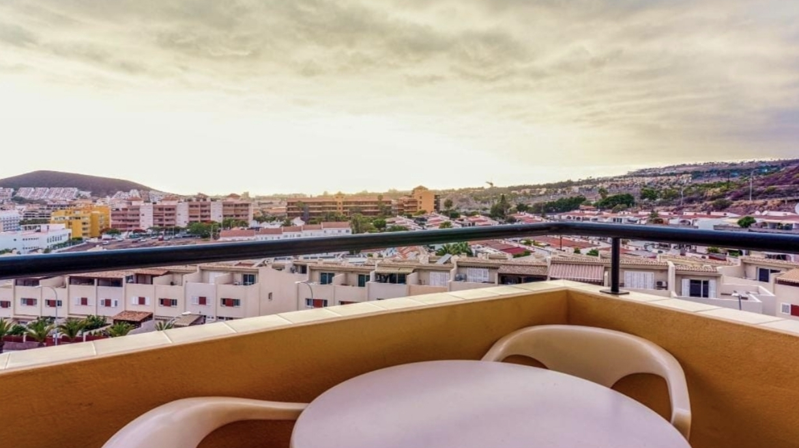

Galleria





Monolocale accogliente situato nel cuore di Los Cristianos, una delle località più autentiche e vissute di Tenerife Sud. Una zona che conserva l'anima del vecchio villaggio di pescatori, oggi perfettamente integrata con servizi, spiagge e collegamenti.
È la soluzione ideale per chi desidera una vacanza rilassante, pratica e senza auto, con il mare, i ristoranti e la vita quotidiana locale a pochi passi.
Los Cristianos è uno dei pochi luoghi di Tenerife dove si respira ancora la vita reale dell'isola:
Contattaci per disponibilità e prezzi
💬 Contattaci su WhatsApp